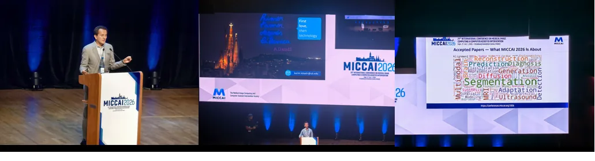
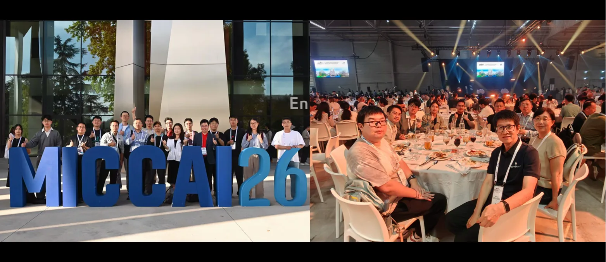
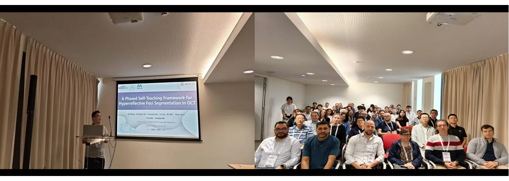

2026年9月27日至10月1日，iMED团队参加了在法国斯特拉斯堡举办的第29届国际医学图像计算与计算机辅助干预会议（Medical Image Computing and Computer Assisted Intervention，MICCAI 2026）。本次会议由iMED团队负责人赵一天老师带队，牟磊老师以及团队成员李宏硕、许卓婷、吴东涵共同参会。
MICCAI是医学图像计算与计算机辅助干预领域最具影响力的国际学术会议之一，汇聚了来自世界各地的专家学者、青年科研人员及产业界代表。会议围绕医学图像分析、计算机辅助诊疗、深度学习、多模态学习、可信人工智能及智能医疗等前沿方向展开，通过主题报告、专题研讨、口头报告、海报展示和技术展览等多种形式，为全球研究人员提供了分享最新成果和开展深入交流的重要平台。

MICCAI 2026 会议现场
在会议中，iMED团队成员牟磊、李宏硕、许卓婷和吴东涵分别围绕各自的研究工作进行了成果展示，并通过Poster交流形式与国内外同行展开深入交流和讨论：
- 牟磊就DSA脑血管精细化解析开展研究，通过结构引导与语义解耦实现多类脑血管的自动识别与精准分割；
- 李宏硕围绕角膜内皮细胞跨域鲁棒分割开展研究，针对不同中心、疾病、设备及物种所带来的域偏移问题，探索提升模型跨域泛化能力的方法；
- 许卓婷展示了基于眼—脑跨模态关联的痴呆智能筛查研究，通过引入脑结构先验提升基于视网膜OCTA影像的疾病筛查能力；
- 吴东涵围绕基于原型学习与证据学习的早产儿视网膜病变智能分期进行了成果展示，探索提升ROP分期准确性及模型预测可靠性的有效方法。
相关研究聚焦于医学图像智能分析，涵盖医学图像分割、疾病智能识别及可靠临床决策等研究方向，展示了团队在医学人工智能领域持续开展的研究探索与最新进展。

iMED团队在MICCAI 2026的合影与交流
此外，团队还参加了MICCAI 2026同期举办的OMIA Workshop。吴东涵围绕高反射点（Hyperreflective Foci，HRF）分割与疾病长期监测相关研究进行了口头汇报，展示了团队在眼科医学图像分析与临床定量研究方向上的研究成果。

吴东涵在OMIA Workshop进行口头汇报
通过参加MICCAI 2026，团队不仅展示了iMED在医学图像智能分析与医学人工智能领域的最新研究成果，也在交流中进一步拓宽了学术视野，提升了对医学图像计算与人工智能前沿方向的认知。未来，iMED团队将继续加强与国内外优秀科研团队的交流合作，围绕医学图像智能分析与眼脑联动方向开展深入研究，推动相关研究成果不断向临床应用与实际需求方向转化。
编辑：吴东涵、许卓婷、李宏硕